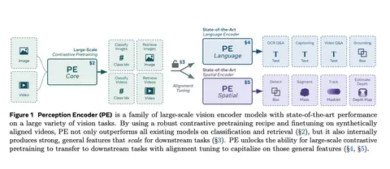

Сегодня разбираем статью, авторы которой предлагают простой визуальный энкодер, обученный только на открытых данных, без сложных архитектур и языковых моделей. Всё обучение — это contrastive learning между изображениями и подписями. Исследователи показывают, что даже в таком режиме можно получить эмбеддинги, которые превосходят существующие модели на стандартных бенчмарках. Главная идея: сильные визуальные представления появляются не обязательно в последнем слое модели, а где-то внутри.
В архитектуре используется базовая ViT-модель с разрешением 224. При обучении применяются стандартные аугментации, attention pooling через CLS-токен и несколько инженерных приёмов: прогрессивное увеличение разрешения, обучение с большим batch size, оптимизатор LAMB вместо AdamW, маскирование части изображений с регуляризацией (maskfit), RoPE вместе с позиционными эмбеддингами. Вся модель обучается на contrastive loss — пары «изображение-текст» берут из общедоступных коллекций. Чтобы сэкономить вычисления, сначала обучают на низком разрешении, потом повышают до 336. Такой подход не только ускоряет обучение, но и, как утверждают авторы, помогает избежать переобучения позиционных эмбеддингов.
После обучения на изображениях авторы подключают видео. Они берут небольшой датасет с роликами и описаниями, прогоняют по 8 кадров через perception encoder, усредняют эмбеддинги и обучают contrastive loss на парах «видео-текст». Часть описаний взяли из открытых источников, часть — сгенерировали своей моделью. Для этого они собрали отдельную VLM (PLM), в которую встроили perception encoder и дообучили на видео и картинках с подписями. Модель даёт черновой текст, который потом правят вручную и добавляют метаинформацию — действия, объекты, временные сегменты. Эти описания идут в обучение. Авторы пишут, что это помогает даже в задачах классификации изображений.
На бенчмарках perception encoder показывает хорошие результаты. Авторы замечают: если взять не последний слой, а, например, 47-й, то на многих задачах это даёт лучший результат. У других моделей эмбеддинги либо слабее в середине, либо не меняются от увеличения модели. У perception encoder эффект усиления заметен.
Чтобы подключить этот энкодер к языковой модели, обучают projection head на выбранном слое — с температурой и двухслойным MLP. Такой подход даёт выигрыш по качеству по сравнению с head'ами на других слоях. Чем больше языковая модель — тем выше метрики.
Однако есть несколько моментов, которые вызывают вопросы. Во-первых, сравнение с конкурентами неполное: в основной статье нет упоминания Qwen, хотя в другом материале от тех же авторов сравнение с ней есть — и Qwen выигрывает по ряду задач. Во-вторых, идея, что видеоданные помогают классификации изображений, не объяснена, авторы не предлагают гипотезу, почему так происходит. В-третьих, подход с выбором «лучшего» слоя работает у их модели, но неясно, насколько он универсален. Отдельно хочется понять, насколько perception encoder стабилен вне тех задач, которые выбрали для оценки.
В целом статья показывает, что простая архитектура с грамотной инженерией и небольшим дообучением может дать представления, которые хорошо работают на downstream-задачах. Авторы не предлагают революции, но аккуратно исследуют поведение модели и дают полезные практические выводы — особенно про выбор слоя и влияние видеоданных.
Разбор подготовил
CV Time
